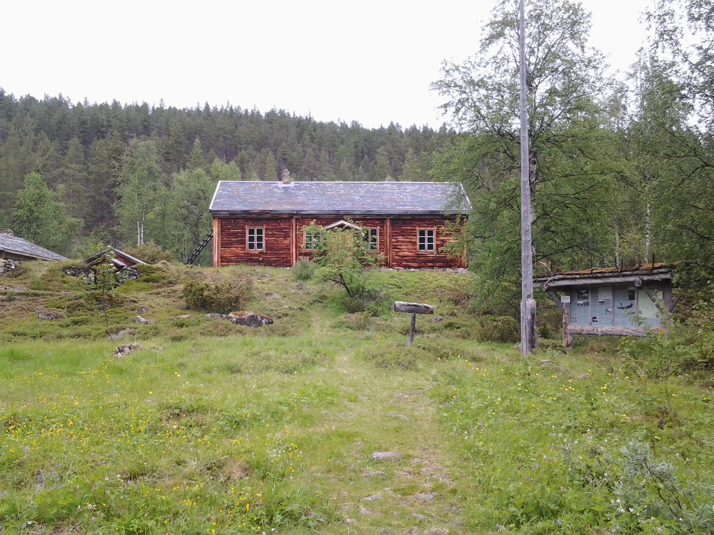

Ivalojoki (inarinsaameksi Avveeljuuhâ, pohjoissaameksi Avviljohka)
on Ylä-Lapissa virtaava, Inarijärveen laskeva 180 kilometrin pituinen "kultajoki".
Ivalojoki saa alkunsa Korsatunturilta Inarin ja Enontekiön kuntien rajalta.
Sen ensimmäiset latvauomat hipovat Peltotunturin (katso myös Tenojoki) jängillä Suomen ja Norjan rajaa "Suomi-neidon"
kaulan ja käsivarren yhtymäkohdassa Lemmenjoen kansallispuiston länsilaidalla. Joki laskee Inarijärveen noin viiden
kilometrin pituisena suistoalueena runsaan kymmenen kilometrin päässä nimikkokylästään Ivalosta, jonka se halkaisee
verkkaisesti virtaavana matalana vesiväylänä. Ivalojoen sivujokia ovat mm. Repojoki, Tolosjoki sekä kultalöydöistään
tunnetut Sotajoki ja Kyläjoki. Ivalojoki on lähes koko pituudeltaan erämaajoki. Aluksi se virtaa rauhallisena
ja kapeahkona Lemmenjoen kansallispuiston eteläisimpien soiden ja korpien läpi.
Puolimatkasta kansallispuisto muuttuu Hammastunturin erämaa-alueeksi, missä joki kulkee lähes Ivaloon asti.

Ivalojoki on tullut tunnetuksi "kultaisena jokena". Suuren kultaryntäyksen aikana joen rantamille nousi mm.
Ivalojoen Kultala (1870), jonka kiihkeimmistä vaiheista on tehty myös elokuva Lapin kullan kimallus
(Åke Lindman). Jokivarsilla ja sivupuroilla harjoitetaan edelleen kullan etsintää sadoilla vaihtelevan
kokoisilla kultavaltauksilla.
Ivalojoki on vuodesta toiseen lisännyt suosiotaan matkailukohteena. Vuonna
2005 se valittiin Vuoden Retkikohteeksi. Joen 60 kilometrin pituisella koskipitoisella
varsinaisella retkeilyosuudella Kutturasta Toloseen harrastetaan sekä kanootti- että viime vuosina suosiotaan
lisännyttä kumilauttaretkeilyä. Entisiin ja nykyisiin kulta-alueisiin pääsee tutustumaan myös patikoiden merkittyjä
reittejä pitkin. Ivalojoen Kultalan kohdalla on joen ylittävä riippusilta.
Kalastettavina lajeina joessa ovat taimen ja harjus. Myös hauki ja siika voivat tarttua
pyydykseen. Sivupuroissa esiintyy runsaasti vaaksanmittaista taimenta, joka ei ole tammukkaa,
vaan alamittaista taimenta.
 Kalastettavina lajeina joessa ovat taimen ja harjus. Myös hauki ja siika voivat tarttua
pyydykseen. Sivupuroissa esiintyy runsaasti vaaksanmittaista taimenta, joka ei ole tammukkaa,
vaan alamittaista taimenta.
Kalastettavina lajeina joessa ovat taimen ja harjus. Myös hauki ja siika voivat tarttua
pyydykseen. Sivupuroissa esiintyy runsaasti vaaksanmittaista taimenta, joka ei ole tammukkaa,
vaan alamittaista taimenta.